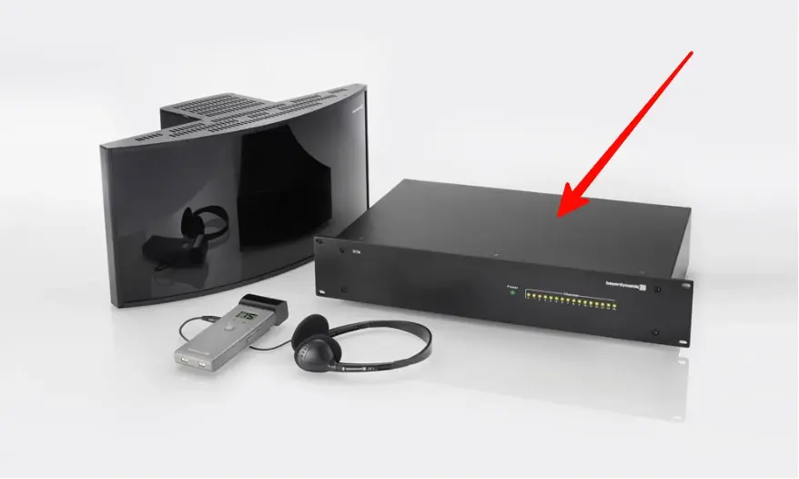
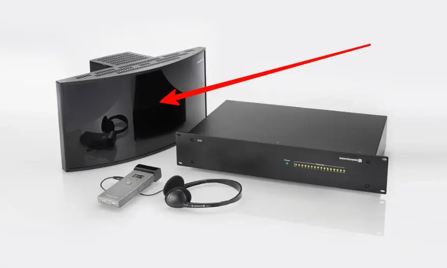
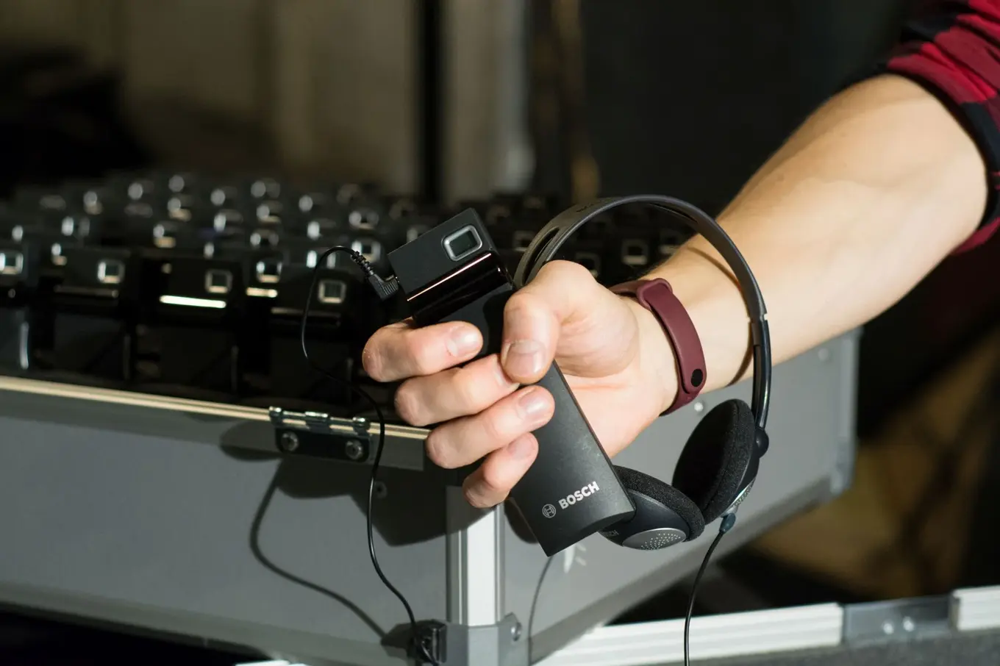

Центральный блок

Роль центрального блока заключается в том, чтобы сигнал, поступивший с блока конференц-системы распределить на каналы-пульты, количество которых соответствует количеству переводчиков-синхронистов.
Пульт переводчика

Сигнал от центрального блока синхроперевода поступает в будку для переводчиков на пульт переводчика. Переводчик слышит речь в наушниках и синхронно выполняет перевод в микрофон, подключенный к его пульту. Пульт переводчика с своё время имеет возможность переключения между выходными каналами. Переведенная речь, поступающая с множества пультов переводчиков, распределяется по соответствующим каналам на приемные устройства участников мероприятия. Таким образом, каждый участник может получить в наушниках перевод речи на понятный ему язык, переключив приемное устройство на соответствующий канал.
ИК-излучатель

При режиме работы системы синхронного перевода в зале устанавливается несколько инфракрасных излучателей, цель которых – ретрансляция сигнала на приемные устройства участников мероприятия в различных предустановленных инфракрасных каналах.
Приёмное устройство (селектор)

Осуществляет прием сигнала от распределителя по выбранному каналу связи и передачу его в наушники. Передача сигнала может быть проводной и беспроводной. В последнем случае чаще всего применяется инфракрасный диапазон. Выбор языка-канала осуществляется с помощью соответствующей кнопке на пульте.
Наушники

Используются переводчиками-синхронистами и самими участниками. Первые слышат в наушниках оригинальную речь докладчика, вторые – перевод с языка докладчика на свой родной язык.
Проводная или беспроводная?
Проводные системы дешевле и обеспечивают надежную передачу данных без потерь, обладая менее уязвимой помехозащищённостью. В то же время дешевизна самих систем быстро компенсируется накладными расходами при увеличении числа потенциальных участников мероприятия. Для больших помещений с несколькими тысячами участников применение проводной системы нецелесообразно. Однако если речь идет о сравнительно небольшом мероприятии (50-200 человек), то проводная система синхронного перевода – это вполне жизнеспособная опция. Еще одно преимущество беспроводных систем – свобода передвижений участников.